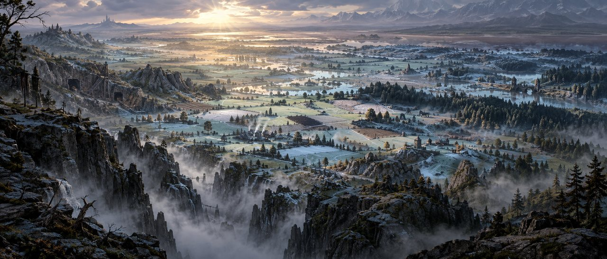

Projet AAA · suivi · mardi 6 octobre 2026 · semaine du 6 au 12 octobre
Jour 1
Reprise après la remise à zéro du quota de la semaine (mardi 1:00). Le directeur travaille avec le Chef : règles du quota, questions de la nuit 03 tranchées, gibier validé, puis une étude de qualité et le report des décisions dans les documents.
Mise à jour : 06/10/2026 à 18:05
Résumé
13 validés
Quota : il n'y a plus de réserve, le quota de la semaine devient une règle de travail (D-231). Un budget par jour d'environ 14 %, des paliers à 70, 85 et 95 %, un coût estimé dans chaque ticket, un agent neuf pour chaque correction, et un compteur affiché au démarrage.
Le gibier est validé (T-0135) : sanglier, lapin et perdrix grise, après une correction faite par un agent neuf.
Toutes les questions de la nuit 03 sont tranchées : brume et belvédère (D-232), quatre saisons (D-233), horde de 20 (D-234), bêtes et qualité des modèles (D-235), méfiance, « Paria », chien et loup, Tempête de Neige (D-236).
Qualité AAA : le directeur juge le cheval trop pauvre en détails (poils en touffe collée). L'étude sur le cheval (T-0142, validée) propose des textures plus fines et des cartes de crins pour tous les modèles (≈ 4 à 7 % du quota).
Documents : D-232 à D-249 sont reportés et validés (T-0143, T-0144, T-0147, T-0150, T-0151) ; le printemps s'appelle le Dégel et l'automne la Moisson (D-237).
Les files de travail
Chaque ticket a un exécutant et un vérificateur. Depuis D-231, une correction est confiée à un agent neuf, et chaque ticket porte son coût estimé, en part du quota de la semaine.
Modèles 3D
Les bêtes du prototype, faites sur ce PC, sans Unreal.
T-0135 · D-218 · D-231
Le gibier : sanglier, lapin, perdrix grise
Trois bêtes de la nature libre autour du hameau, avec leurs animations.
Validé
Correction 1 reprise par un agent neuf à 04:53 (arrêtée le 03/10 pour le quota), livrée à 05:09 : sabots du sanglier reposés au pas selon le pack, au plus 4 os par sommet, GLB et FBX identiques à 0,005 cm près. Vérifiée et validée à 05:25.
T-0142 · D-235 (9)
Étude : monter les modèles au niveau AAA, essai sur le cheval
Diagnostic du cheval, au moins trois pistes (textures fines et relief, crinière et queue en vrais brins, meilleure génération, matériau de poil), images avant et après, coût de chacune, puis une chaîne recommandée pour tous les modèles.
Validé
Lancée à 05:43, livrée à 06:41, corrigée par un agent neuf (rendus, crins noirs, coûts) et validée à 07:06. Recommandation : finir l'outil sur le cheval (≈ 1 %), le montrer au directeur, puis l'appliquer aux modèles existants (≈ 4 à 7 % en tout) ; meilleure génération pour les modèles à venir. De très près, le niveau AAA reste hors de portée en local.
T-0145 · D-235 (9) · D-240
Qualité AAA, 1re partie : cheval, loup, chien
Finir l'outil de l'étude sur le cheval, puis textures fines et cartes de crins et de poils sur les trois bêtes vues de plus près ; l'ancienne version est gardée.
Validé
Lancé à 07:15, livré à 09:29, corrigé deux fois par des agents neufs (tapis du cheval, crinière, noirs, toupet, légende), validé à 12:28. Cheval, loup et chien en nouvelle version, l'ancienne gardée ; animations identiques. De très près, ce n'est pas encore du niveau AAA.
T-0149 · D-240
Qualité AAA, 2e partie : sanglier, lapin, perdrix, araignée, chauves-souris
La même chaîne, avec l'outil fini dans T-0145.
Validé
Lancé à 12:28, livré à 13:48, corrigé par un agent neuf (yeux et queue du sanglier, deux textes) et validé à 14:59. Détail de matière sur les cinq bêtes, soies du sanglier ; animations identiques. Les cinq bêtes sont sur la page « Modèles 3D » depuis 15:11.
Après l'étude de qualité : morts-vivants variés et meneur de la horde, défauts à corriger, vraies foulées, marches blessées, monte et descente du cheval, nuée suspendue, oiseaux, laies (D-234, D-235).
Unreal
Le prototype jouable ; un seul agent à la fois dans le projet.
T-0146 · D-234 · D-237 · D-238
La horde de 20
Déclenchement après l'étape 2, 15 morts-vivants, 4 esprits et un meneur provisoire, éveil à 45 % des PV, sort sur toute l'aire, réplique puis rappel de la touche à 5 s, NavMesh et apparitions hors de vue.
Validé
Lancé à 07:15, livré à 09:02, corrigé par un agent neuf (commit 1daebf0) avec D-245 et D-246, validé à 10:55. 5 lancements verts sur le bon code : 0 créature replacée d'un coup, 0 apparition à vue ; la horde ralentit entre l'éclair et le sort (le héros garde au moins 28 PV) ; carte « [G] Libère » ; 140 à 148 images/s.
T-0131 · P1-05 · P1-19
Limites de la zone et patrouille au-delà du ravin
Les parois non grimpables aux limites (propres au prototype) et la patrouille de l'Ordre vue depuis la sortie.
Validé
Lancé à 10:56, livré à 12:32, corrigé par un agent neuf (commit d97e379) et validé à 14:10. 807 murs des limites non grimpables (retirables par un réglage) ; 3 soldats bien différents et un possédé au-delà du ravin ; plan de caméra de 6 s, passable par Entrée. À reprendre : à la manette, la touche qui passe le plan est déjà prévue pour la pause dans les maquettes.
T-0132 · D-223 à D-227 · D-247 · D-249
Le chien et le loup dans le jeu
Le chien suit le héros (rôles à 35 et 70, pas de mort définitive, la patte qui boite suit la blessure), le loup à l'enclos, matériau commun des bêtes, l'entité qui garde son réceptacle, sous-titres à 36 px réglables.
Validé
Lancé à 13:55, coupé deux fois par une surcharge des serveurs, livré à 16:12, corrigé par un agent neuf (yeux dorés, bilan remis) et validé à 17:25. Le chien suit le héros (rôles à 35 et 70, boiterie de la bonne patte, abri et retour) ; le loup à l'enclos ; matériau commun des bêtes ; grand sort bloqué avant l'éveil ; l'entité garde son réceptacle ; sous-titres de 28 à 48 px ; croix bas pour passer le plan de la patrouille.
Puis l'escalade (P1-05, D-248 (4)), l'animation d'arc (D-248 (2)), la saison et la météo (D-232, D-233, D-236).
Documents
Reporter les décisions du directeur dans Documents/.
T-0143 · D-232 · D-233 · D-234 · D-235 · D-236
Reporter D-232 à D-236 dans Documents/
Quatre saisons, brume, horde de 20, bêtes, méfiance progressive, « Paria », Tempête de Neige ; plus les petits restes de QP1 et de Combat Hybride.
Validé
Livré à 05:57 (17 documents et 3 fichiers du prototype), renvoyé en correction à 06:03 pour de petites reprises, corrigé par un agent neuf et validé à 06:06. Documents/ est aligné jusqu'à D-236. Restent au directeur : les noms du printemps et de l'automne et les options ouvertes.
T-0144 · D-237 · D-238
Reporter D-237 dans Documents/
Le Dégel et la Moisson, ce que change chaque saison, méfiance en 4 étapes, « Paria », horde de 20, pierres de lumière, chute du cavalier, champs sous la neige ; plus les passages restés hors de T-0143.
Validé
Lancé à 06:16, livré à 06:37, renvoyé en correction à 06:45 (phrases sur les prédateurs, plan de production), corrigé par un agent neuf avec D-238 et validé à 06:57. Documents/ est aligné jusqu'à D-238.
T-0147 · D-239 · D-240
Restes de documents
Valeurs de départ de la méfiance, noirs des poils et crins dans la bible, l'invite « Visez la horde » des maquettes, QP1, Combat Hybride, introduction des points à arbitrer du GDD.
Validé
Lancé à 07:15, livré à 07:20, validé à 07:27. Documents/ est aligné jusqu'à D-240 ; D-241 ira dans le prochain petit ticket.
T-0150 · D-241 · D-242 · D-243
Reporter D-241 et D-242
Obsidienne, méfiance de l'Ordre par étapes, rappel « touche et mot », l'image 13 d'automne dans la bible et le plan de production, puce D-240 du GDD.
Validé
Lancé à 08:24, livré à 08:28, renvoyé en correction à 08:31, corrigé par un agent neuf avec D-243 et validé à 08:58. Documents/ est aligné jusqu'à D-243.
T-0151 · D-244 à D-249
Reporter D-244 à D-248
Écarts de la méfiance de l'Ordre, horde (ralenti, 45 m, réceptacle), sous-titres, patrouille et escalade ; deux fichiers qui disent encore « Neutre » trop tôt.
Validé
Lancé à 14:00, livré à 14:20, corrigé par un agent neuf avec D-249 et validé à 14:31. Documents/ est aligné jusqu'à D-249.
Une fois validé : choisir les noms du printemps et de l'automne, et les options laissées ouvertes.
Images
Images de référence du prototype.
T-0148 · D-238 (3)
L'image 13 d'automne
La référence du panorama refaite en fin d'automne, sous la première neige, avec la même composition et la même lumière ; 3 ou 4 variantes.
Validé
Lancé à 07:15, livré à 07:36, corrigé (montage qui garde la lumière de l'image 13). Les variantes 1 et 2 sont vérifiées propres ; le directeur a choisi la variante 2 (D-242). Les variantes 3 et 4, qui gardaient des défauts, sont écartées. Clos à 08:22.
Le directeur choisira la variante ; la bible et le plan de production suivront.
Modèles 3D du jour
Les modèles validés aujourd'hui. Le directeur a demandé de corriger leurs défauts connus (D-235 (8)) après l'étude de qualité.
Le grand mâle, de trois quarts. (version validée le matin, avant la qualité améliorée.)
Un grand mâle de 0,92 m au garrot ; des laies d'environ 0,75 m viendront pour la compagnie (D-235). Il fuit d'habitude, mais charge s'il est menacé, et boitera quand il est blessé. Sa course sera refaite avec de vraies foulées.
La perdrix posée, de trois quarts. (version validée le matin, avant la qualité améliorée.)
0,27 m pour 0,44 m d'envergure, pour les vols de la plaine. D'autres oiseaux viendront selon le danger, la saison, la météo et la présence des hommes (D-235 (5)). Son changement de corps entre le sol et le vol sera corrigé.
Image 13 d'automne : la variante 2, « saupoudrage »
Validé
T-0148 · D-238 (3)

La variante 2 retenue : environ 16 % de la plaine sous la première neige.
La référence du panorama du belvédère en fin d'automne (D-238 (3), D-242) : même composition et même contre-jour que l'image 13, chaumes et champs labourés sous une première neige, plaine sauge plus froide. Hors de la neige, tout est l'image d'origine au pixel près.
Début de la journée : état du projet pour le directeur.
Décision D-231 : règles du quota de la semaine, compteur calé sur la semaine du 29/09 (tous projets : aaa-game en avait pris 71 %).
Correction 1 de T-0135 confiée à un agent neuf (première application de D-231).
T-0135 livré ; vérification lancée.
Questionnaires du directeur : D-232 (brume plus tardive, arrivée au belvédère acceptée, réglages d'image gardés) et D-233 (quatre saisons de 30 jours ; le prototype montre la fin de l'automne, avec les premières neiges).
D-234, la horde : 20 créatures avec un meneur, éveil de l'entité à 45 % des PV, le grand sort balaie toute l'aire, NavMesh et apparitions hors de vue avant la vidéo des investisseurs.
T-0135 validé (le gibier).
D-235, les bêtes (pierres de lumière dans la mine, cheval qui a peur des monstres, vraies foulées, aucun défaut accepté, étude de qualité AAA) et D-236, les règles (méfiance qui baisse peu à peu, « Paria » après plusieurs hameaux, Tempête de Neige tirée au hasard).
Lancement de T-0142 (étude de qualité sur le cheval), de T-0143 (report de D-232 à D-236) et de l'ajout du cheval et du gibier à la page « Modèles 3D ».
T-0143 livré (D-232 à D-236 dans 17 documents) ; vérification lancée.
Page « Modèles 3D » : cheval, sanglier, lapin et perdrix ajoutés ; loup et chien réallégés sans aucun écart d'animation ; fiches de l'araignée et de la chauve-souris à jour de D-235 (20 modèles, 75 animations).
T-0143 à corriger : le fond est bon (tout est reporté, aucun nom de saison inventé), mais une phrase fausse dans le Didacticiel, un repère perdu dans le GDD et deux petites reprises. Correction confiée à un agent neuf.
Une page par semaine (choix du directeur) : les pages de jour et de nuit de cette semaine passent dans la page « Semaine du 6 au 12 octobre », reliée à « Pages du projet ».
Correction de T-0143 livrée (cinq points) ; nouvelle vérification lancée.
T-0143 validé : Documents/ est aligné jusqu'à D-236.
D-237 : le printemps s'appelle le Dégel et l'automne la Moisson ; les saisons changent aussi les prix et les quêtes ; méfiance en 4 étapes de 5 % ; « Paria » après 3 lieux hostiles ; horde de 15 morts-vivants, 4 esprits et un meneur ; pierres de lumière bleu-vert ; l'Ange reste la plus grande silhouette.
Lancement de T-0144 : report de D-237 dans les documents.
T-0144 livré (D-237 dans 14 documents et 6 fichiers du prototype) ; vérification lancée.
D-238 : un nom par espèce de prédateur trahi ; « Amical » dès que la méfiance tombe à 0 ; une image 13 d'automne pour le panorama ; le grand sort se vise, sauf dans la scène de la horde.
T-0142 livré (étude de qualité AAA sur le cheval) ; vérification lancée.
T-0144 à corriger (le fond est bon : lexique et calculs justes) ; correction confiée à un agent neuf, avec le report de D-238.
T-0142 à corriger (base confirmée, mais deux rendus ratés, des coûts à refaire et des crins bruns) ; correction confiée à un agent neuf.
Correction de T-0144 livrée, avec D-238 ; nouvelle vérification lancée.
T-0144 validé : Documents/ est aligné jusqu'à D-238.
D-239 : les chiffres de la méfiance (+20 %, pas de 5 %, −10 %) sont des valeurs de départ, réglables après des parties d'essai ; les 4 étapes restent fixes.
Correction de T-0142 livrée ; nouvelle vérification lancée.
T-0142 validé (l'étude de qualité) : tous les chiffres refaits sont justes. Suite à choisir par le directeur.
D-240 : les améliorations de l'étude s'appliquent tout de suite aux 8 modèles existants ; noir jusqu'à #0C0C0C pour les poils et crins ; pas d'appui extérieur pour l'instant.
Lancement de quatre chantiers en parallèle : T-0145 (qualité du cheval, du loup et du chien), T-0146 (la horde de 20 dans Unreal), T-0147 (restes de documents), T-0148 (l'image 13 d'automne). T-0131 suivra la horde, T-0149 suivra T-0145.
T-0147 livré (restes de documents) ; vérification lancée.
D-241 : l'obsidienne est une exception nommée au noir du décor ; la méfiance de l'Ordre baisse aussi par étapes (la Voie A en fait passer plusieurs) ; le rappel du grand sort montre la touche et un mot court.
T-0147 validé : Documents/ est aligné jusqu'à D-240.
T-0148 à corriger (premier plan éclairci, brume perdue en variante 4) ; correction confiée à un agent neuf.
Correction de T-0148 livrée (variantes en montage, lumière de l'image 13 gardée) ; nouvelle vérification lancée.
D-242 : le directeur choisit la variante 2 (« saupoudrage ») comme image 13 d'automne ; T-0148 est clos.
Lancement de T-0150 : report de D-241 et D-242 dans les documents.
T-0150 livré (D-241 et D-242 dans les documents) ; vérification lancée.
D-243 : la méfiance de l'Ordre compte 6 étapes ; la Voie A en fait passer 2 ; l'Ordre ne devient Neutre qu'à 0 ; le mot du rappel du grand sort est « Libère ».
T-0150 à corriger ; correction confiée à un agent neuf, avec le report de D-243.
Correction de T-0150 livrée, avec D-243 ; nouvelle vérification lancée.
D-244 : les 6 étapes de la méfiance de l'Ordre ont des écarts plus grands au début (4, 4, 3, 3, 3, 3) ; après la Voie A, le remède du vivandier passe de 10 à 9.
T-0150 validé : Documents/ est aligné jusqu'à D-243.
T-0146 livré (la horde de 20 dans Unreal) ; vérification lancée.
D-245 : entre l'éclair et le sort, la horde ralentit (attaques plus rares et moins fortes) ; sorties dans le dos à 10 m ; le grand sort reste libre avant l'éveil.
T-0146 à corriger (preuves à refaire) ; correction confiée à un agent neuf, avec D-245. T-0145 livré (qualité du cheval, du loup et du chien) ; vérification lancée.
D-246 : dans la brume, les créatures de la horde qui sortent dans le champ de vision le font au-delà de 45 m.
T-0145 à corriger (le tapis du cheval pris par le réglage des crins) ; correction confiée à un agent neuf.
Correction de T-0146 livrée (horde de 20 avec D-245 et D-246) ; nouvelle vérification lancée.
T-0146 validé : la horde de 20 est prête pour la vidéo des investisseurs (meneur encore provisoire).
Lancement de T-0131 (limites de la zone et patrouille au-delà du ravin) dans Unreal.
D-247 : entre l'éclair et le sort, l'entité garde son réceptacle (les PV ne descendent pas sous un plancher, avec un effet visible) ; sous-titres à 36 px par défaut, réglables par le joueur.
Correction de T-0145 livrée (tapis du cheval, crinière, noirs) ; nouvelle vérification lancée.
Pages : les jours et les nuits sont numérotés dans chaque semaine (Jour 1, Nuit 1…) ; la semaine va du mardi au lundi, et la nuit du lundi au mardi en est la dernière.
T-0145 à corriger une 2e fois (toupet, reflet, légende) ; correction confiée à un agent neuf.
2e correction de T-0145 livrée ; vérification lancée.
T-0145 validé : le cheval, le loup et le chien ont leur nouvelle qualité (planches ci-dessous).
Lancement de T-0149 (qualité du sanglier, du lapin, de la perdrix, de l'araignée et des chauves-souris) et de la mise à jour de « Modèles 3D » pour les trois premières bêtes.
T-0131 livré (limites et patrouille) ; vérification lancée.
D-248 : soldats générés pour l'instant (MetaHumans à revoir le 07/10) ; animation d'arc faite par programme ; plan de caméra de la patrouille de 6 s, passable ; un ticket d'escalade bientôt.
T-0131 à corriger (soldats trop semblables) ; correction confiée à un agent neuf.
Page « Modèles 3D » publiée avec les nouveaux cheval, loup et chien (cartes de poils, détail du poil, marque gardée) ; 20 modèles, 75 animations, aucune erreur.
T-0149 livré (qualité des cinq autres bêtes) ; vérification lancée.
Correction de T-0131 livrée (soldats différents, plan de 6 s passable) ; nouvelle vérification lancée.
T-0131 validé (limites de la zone et patrouille de l'Ordre).
Lancement de T-0132 (le chien et le loup dans Unreal) et de T-0151 (report de D-244 à D-248).
T-0149 à corriger (yeux et queue du sanglier, deux phrases fausses) ; correction confiée à un agent neuf.
T-0151 livré (D-244 à D-248 dans les documents) ; vérification lancée.
D-249 : le grand sort est bloqué avant l'éveil (c'est l'entité qui donne le pouvoir) ; sous-titres réglables de 28 à 48 px ; quand les PV touchent le plancher, voile violet, yeux dorés, « Pas encore. » et un battement sourd. Transmis à T-0132 en cours.
T-0151 à corriger (une ligne) ; correction confiée à un agent neuf, avec le report de D-249.
Correction de T-0151 livrée, avec D-249 ; nouvelle vérification lancée.
T-0151 validé : Documents/ est aligné jusqu'à D-249.
Correction de T-0149 livrée ; nouvelle vérification lancée.
T-0149 validé (qualité des cinq autres bêtes) ; mise à jour de « Modèles 3D » lancée pour elles.
Page « Modèles 3D » publiée avec les nouvelles versions des cinq bêtes : les 8 modèles existants ont tous leur qualité améliorée (20 modèles, 75 animations, aucune erreur).
T-0132 interrompu par une surcharge des serveurs d'Anthropic (erreur 529) pendant un parcours ; l'agent est repris là où il en était, rien n'est perdu.
T-0132 livré (le chien et le loup dans le jeu, D-247 et D-249) ; vérification lancée.
T-0132 à corriger (yeux de l'effet, un bilan écrasé, le rapport) ; correction confiée à un agent neuf.
Correction de T-0132 livrée ; nouvelle vérification lancée.
T-0132 validé : tous les chantiers du jour sont finis.
Fin de la journée, sur décision du directeur : 9,9 % du quota de la semaine utilisés ; le budget restant s'ajoute à demain.
Questions pour le directeur
Les questions de la nuit 03 ont été posées par questionnaires ce matin. Reste ouverte la liste des surnoms de l'entité, à choisir avec l'ami du directeur dans le fil « Échanges ».
2 questions attendent leur réponse. Personne ne les tranche à la place du directeur.
T-0129
La brume revient au belvédère dans 5 à 8 % des parties : que faire ?
Réponse du directeur : Première brume plus tardive : aucune nouvelle brume avant 8 h du jeu (D-232).
D-230 (2)
La « saison moyenne » : point de passage ou intersaisons ?
Réponse du directeur : Quatre saisons complètes, chacune avec ses particularités et des répercussions sur les PNJ (D-233).
T-0130
La horde : déclenchement, taille, battable ou non, défauts visibles ?
Réponse du directeur : Après l'étape 2, 20 créatures avec un meneur, renforts, corrections avant la vidéo (D-234).
T-0133 à T-0135
Les bêtes : tailles, combat de l'araignée, marque et peur du cheval, oiseaux, vitesses ?
Réponse du directeur : Voir D-235 ; et le directeur demande un niveau AAA pour tous les modèles.
D-215 · D-230
Fin de la méfiance, « Paria », chien et loup, Tempête de Neige ?
Réponse du directeur : Voir D-236.
T-0143
Noms du printemps et de l'automne, étapes de la méfiance, « Paria », répartition de la horde, et quelques contradictions entre documents.
Réponse du directeur : Le Dégel et la Moisson ; voir D-237.
Échanges
Surnoms de l'entité : quelle liste ? (à choisir à deux, dans le fil « Échanges »)
T-0149
Le sanglier : soies couchées et crête sombre (aujourd'hui), crête dressée, ou dressée seulement quand il charge ? À regarder sur la planche avant/après du sanglier quand le directeur pourra voir les images. Et ses yeux : l'œil pâle de l'ancienne version (aujourd'hui) ou l'œil sombre de l'image de départ ?
Sur le PC
E:\aaa-proto\essai\gibier\ : sanglier, lapin et perdrix (modèles, vidéos, LISEZMOI) · E:\aaa-proto\essai\etude-qualite\ : l'étude de qualité (T-0142) · D:\aaa-game\.equipe\taches (les tickets) · D:\aaa-game\.equipe\decisions.md (D-231 à D-236)